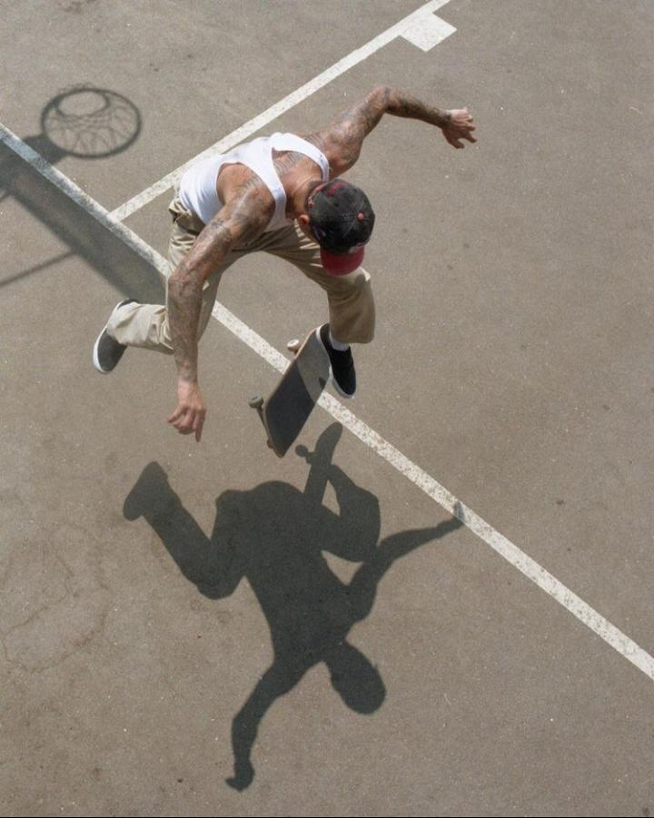

Leticia Bufoni e Silva é uma skatista profissional brasileira, considerada um dos maiores nomes da historia do esporte. Criada no bairro Vila Matilde, aos 14 anos mudou-se para a cidade de Los Angeles, na Califórnia, onde tornou-se uma skatista profissional.

Luan Vilanova de Oliveira mais conhecido como Luan Oliveira é um skatista profissional brasileiro e um dos mais influentes skatistas da sua geração de skaters no Brasil
Kelvin Hoefler é um skatista brasileiro, medalhista de prata nas olimpíadas de Tóquio 2020, tendo sido a primeira medalha do país no evento. Também foi bicampeão dos X Games, em Minneapolis e na Noruega.

Pedro Barros é um skatista brasileiro, medalhista olímpico e apontado por muitos como o sucessor de Sandro Dias e Bob Burnquist sendo o principal representante do país na modalidade Bowl.